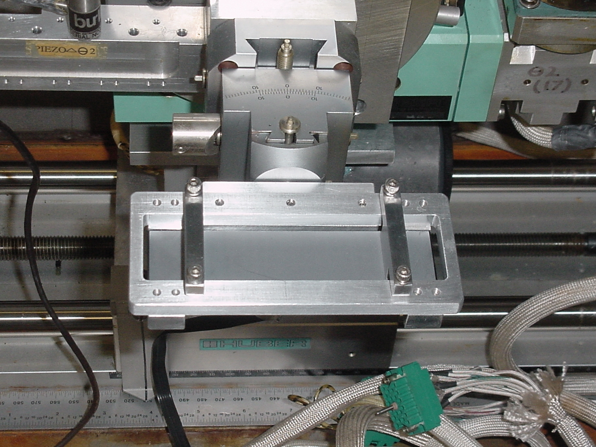
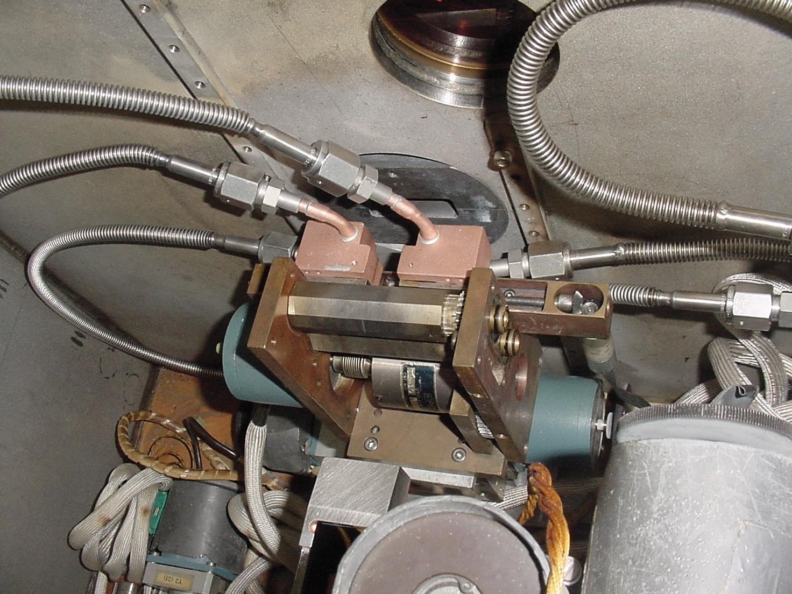

The first multilayer is attached to a water-cooled copper block with InGa alloy.

The mount of the second multilayer.

Both multilayers were prealigned with a water level, and the Bragg reflection was found quickly.
The first multilayer already shows some discoloration, trademark of the He environment in the mono box.

For completeness a picture of the white beam slits, which were rebrazed and cleaned by Jim Savino
just before the run, in order to fix a water leak.